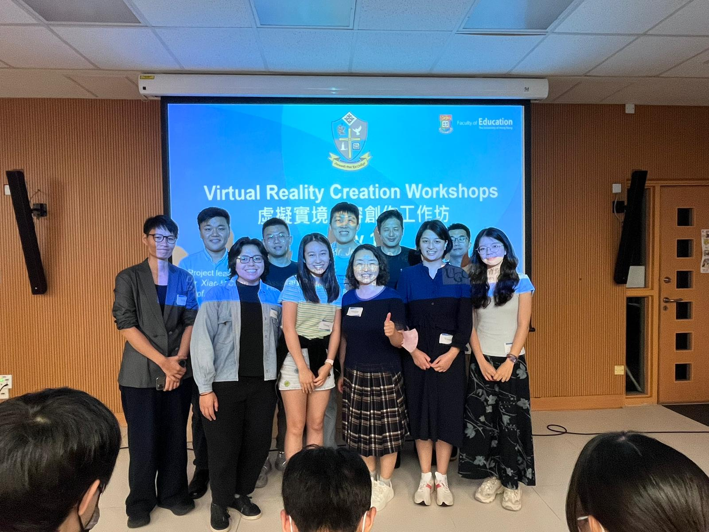

In 2024's summer, I researched and authored three intel reports on tactics, tools, and procedures of possible threat actors to clients. I have attached two reports here. I also shadowed an associate in conducting cybersecurity tests, enhancing practical understanding and contributing to client security measures.
GUI-vil
Scattered Spider
In 2024’s summer, I facilitated a project with Professors Carol Chan and Xiao Hu to make VR accessible to lower secondary students. I contributed to debugging the VR app, teaching students its use, and implementing user feedback.
